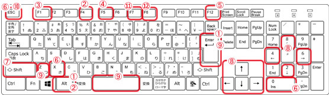
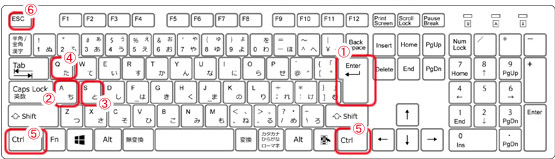

※本作品はキーボードを使用したプレイを想定して制作しております。
※マウスでの操作は対応しておりませんタイトル表示後、エンターキーを押して下さい。
＜基本操作＞

| 操作キー | 内容 | |
| ① | Alt + Enter | ウインドウモードとフルスクリーンモードの切り替え |
| ② | Alt + F4 | ゲームの強制終了 |
| ③ | F1 | ゲームのプロパティを表示 |
| ④ | F5 | 画面サイズの変更 ※戦闘時のカットインアニメには反映されません |
| ⑤ | F12 | 強制的にタイトルに戻る ※誤作動の原因になりますので連続で押さないで下さい |
| ⑥ | X、Esc、0（テンキー） | キャンセル、メニューの表示 |
| ⑦ | Shift | 移動速度アップ（ダッシュ） ※コンフィグで常にダッシュ設定時は通常移動 |
| ⑧ | 矢印キー、2・4・6・8（テンキー） | 主人公キャラやカーソルの移動 |
| ⑨ | Z、Enter、Space | 決定、話す、調べる |
| ⑩ | Esc | ステータス画面を開いたり閉じたりします |
| ⑪ | F7 | 服装の変更 ※服装変更が可能な時のみ動作します |
| ⑫ | F8 | Hプロフィールモードを開きます ※Enter・→キーで次のページ、←キーで前のページ、Escで閉じます |

| 操作キー | 内容 | |
| ① | Enter | 文字送り |
| ② | Ａキー | メッセージウインドウを隠します |
| ③ | Ｓキー | オートモードで移行 ※Escで解除します |
| ④ | Ｑキー | 画面サイズの変更 ※Escで解除します |
| ⑤ | Ctrlキー | メッセージのスキップ |
| ⑥ | Esc | オートモードの解除、バックログからの復帰 |